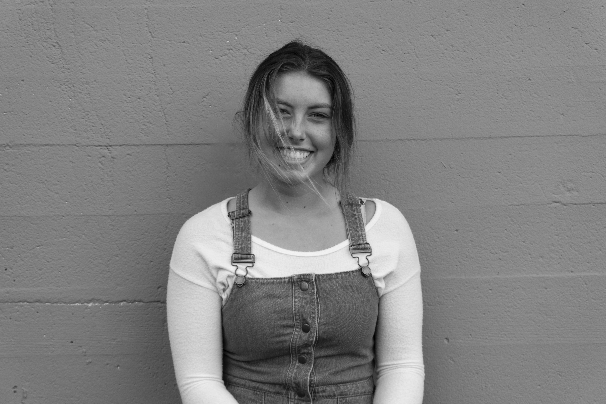
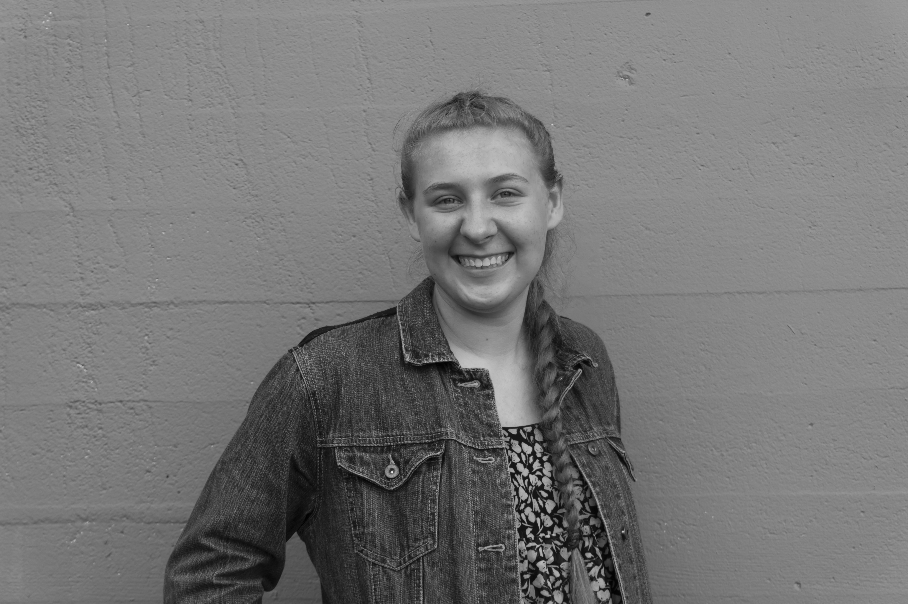

Elyse, Regan, Loza, and Locksley were inspired to create 404girls while participating in the Girls who Code Summer Immersion Program at Adobe, Seattle. Girls who Code is an organization dedicated to providing girls with the coding skills and bravery necessary to pursue a tech career. 404girls’ builds off of this foundation by creating a platform where girls can hear from women who have already succeeded in the tech field and connect them with opportunities, programs, and internships where they can continue developing their coding skills.
Elyse Becker

Elyse Becker is a homeschooled rising junior, schooling through online courses. She’s always been interested in tech & as the lead of electrical on her FIRST Robotics Team she fell in love with the technicalities of how hardware related to software. Always interested in film, music, and photography, she recently began writing lyrical and instrumental music as well as filming and editing creative videos and pursuing more professional photography (landscape, senior portraits etc.).
Regan Toepel

Regan Toepel is a rising junior with an extreme love for soccer and computer science. Her parents and sister support her through her upcoming path to college. She balances athletics and academics as she attends the elite Seattle Preparatory school. Regan is the captain of her ECNL Crossfire soccer team and extremely proud to be apart of the National Honors Society as she dedicates lots of her time tutoring freshman and sophomores.
Loza Gebremariam

Loza Gebremariam is a rising junior at Ingraham High School. She participates in a range of clubs such as BSU, NHS, One World, and many more. She also takes on leadership roles as her class Vice President. In the fall, she will be associated as an IB Diploma Candidate. Loza hopes to continue her interest in computer science while applying her love for business and design throughout her career.
Locksley Kolakowski

Locksley Kolakowski is a senior at Jackson High School and participates in full time Running Start at Cascadia College. She is a proud member of her high school's Principal's Honor Roll and her college's quarterly President's Honors and is on track to be her class' valedictorian. Locksley is a captain on her swim team, participates in volleyball, plays percussion in JHS’ Honors Wind Ensemble and is an avid programmer.